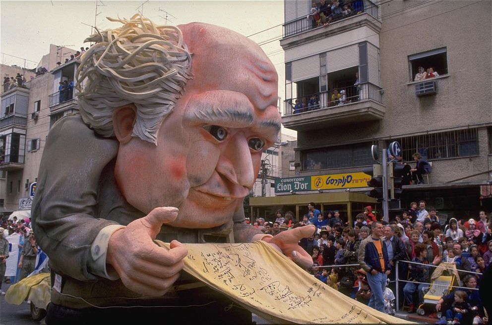

History of Adloyada
The first Adloyada parade was initiated by Avraham Aldema, a
teacher and
co-founder
of "Hevre Trasek", and was held in Tel Aviv during Purim in 1912. This parade was characterized by
provocative costumes and pranks. According to several testimonies, the parade of 1912 was very colorful
and
beautiful. It consisted of giant puppets, a marching band and hundreds of children wearing their Purim
costumes. Throughout the years, the parade became a permanent tradition of Purim. These events were held
parallel to the famous celebrations that were organized by Baruch Agadati. Agadati's merriments had
become
extremely profitable, and so were criticized harshly by "Hevre Trasek" for being over commercialized.

Tel Aviv's Adloyadas were complemented with luxurious Purim balls, created by Baruch Agadati. Throughout
the
years, the parades were expanded and their path was moved from Herzl Street to Allenby Street and to Ibn
Gabirol Street upon the establishment of the state of Israel.
During the 1930s, every Adloyada had a specific theme, for example the tribes of Israel (in 1934), and
the
achievements of the Yishuv. During that time, Tel Aviv's Purim events attracted many tourists from all
around Israel and from abroad.
As opposed to European states, where carnivals were a means to break loose and consisted of extreme
licentiousness, aggressiveness and protest,[citation needed] the Tel Aviv event had different features.
The
main carnival, despite its new name Adloyada, was characterized by a "proper" behavior. The municipality
issued annual limitations on the Purim celebrations such as a prohibition to use explosives and dress up
in
costumes that may offend the Jewish religion or the Israeli nation. Despite the censorship and the
sanctions, there were a few costumes and parades that didn't obey the rules and used the public
festivity to
express social protest, and thus made their mark on the city.
During the 1928 carnival, with the theme "10 years to the national home", Hevre Trasek presented a
10-candle
Menorah (as a symbol to Balfour's statement); instead of candles there was a rude gesture and the sign
"free
Aliya, Jews in the top clerical work". In one of the "Menorah" balls (Menorah was a club founded by
veterans) in 1927, Avraham Atkind won the costume competition for his costume: "balancing the clerk's
salary
in the Palestine government". Atkind's hat had a scale and a photograph of the residence of the British
commissioner in the magnificent Augusta Victoria building in Mount Scopus, as well as a poem, expressing
the
 discontent of the gap between the British clerk's salary and the salaries of local Israelis from all
ethnic
groups.
Gdud Meginei Hasafa (Hebrew: גדוד מגיני השפה, Battalion for the Defence of the Language), an
organization in
Tel Aviv fighting to make Hebrew the common language in Mandatory Palestine,[5][6] used Purim to present
and
to flood the streets with written propaganda. The Gdud documents were distributed during the Purim
carnival.
In addition, the Gdud held an annual costume competition with the theme of the superiority and
importance of
the Hebrew language. In the carnival of 1929, the Gdud presented the "tower of Babylon"; a tower on top
of a
horse-drawn cart with the slogan "revival of the language, revival of the people" and "words can kill".
In the main carnival of 1933, there was a puppet of Hitler riding a horse, as part of the parade. On its
neck there was a sign saying; "kill Jews" and next to it there were 2 Jews bleeding to death. The German
consul in Jerusalem sent a letter to Tel Aviv Mayor Meir Dizengoff in the matter and demanded an
apology,
but Dizengoff replied that Purim is a stage for free speech of public opinion. A year later, a huge
puppet
was presented with a swastika on its back.
In 1935, a giant puppet was built, named "the profiteering monster". On the day of festivities, a public
trial was held for the puppet, during which Dizengoff, Menachem Ussishkin, Chaim Weizmann and Yehoshua
Hankin ruled that the monster was guilty of various crimes including fraud, spending the people's
wealth,
and destruction of the achievements of the pioneers.
In one of the later carnivals, a group of people dressed as Ku Klux Klan members in order to protest
racism
in the United States.
While Purim festivals became central public events in the 1920s and 1930s for expressing current social
issues, the holiday events, overall and despite exceptions, were aimed to strengthen national messages
and
dominant ideologies. As opposed to its Biblical origin, where Purim constitutes "an opposite world" (the
fool becomes the king and the king is presented as a fool around town), in Tel Aviv the holiday was
institutionalized to conserve the social hierarchy and the parades were led by the city's mayor Meir
Dizengoff, astride a horse.
During the Second World War, the Adloyada tradition was extinguished.
discontent of the gap between the British clerk's salary and the salaries of local Israelis from all
ethnic
groups.
Gdud Meginei Hasafa (Hebrew: גדוד מגיני השפה, Battalion for the Defence of the Language), an
organization in
Tel Aviv fighting to make Hebrew the common language in Mandatory Palestine,[5][6] used Purim to present
and
to flood the streets with written propaganda. The Gdud documents were distributed during the Purim
carnival.
In addition, the Gdud held an annual costume competition with the theme of the superiority and
importance of
the Hebrew language. In the carnival of 1929, the Gdud presented the "tower of Babylon"; a tower on top
of a
horse-drawn cart with the slogan "revival of the language, revival of the people" and "words can kill".
In the main carnival of 1933, there was a puppet of Hitler riding a horse, as part of the parade. On its
neck there was a sign saying; "kill Jews" and next to it there were 2 Jews bleeding to death. The German
consul in Jerusalem sent a letter to Tel Aviv Mayor Meir Dizengoff in the matter and demanded an
apology,
but Dizengoff replied that Purim is a stage for free speech of public opinion. A year later, a huge
puppet
was presented with a swastika on its back.
In 1935, a giant puppet was built, named "the profiteering monster". On the day of festivities, a public
trial was held for the puppet, during which Dizengoff, Menachem Ussishkin, Chaim Weizmann and Yehoshua
Hankin ruled that the monster was guilty of various crimes including fraud, spending the people's
wealth,
and destruction of the achievements of the pioneers.
In one of the later carnivals, a group of people dressed as Ku Klux Klan members in order to protest
racism
in the United States.
While Purim festivals became central public events in the 1920s and 1930s for expressing current social
issues, the holiday events, overall and despite exceptions, were aimed to strengthen national messages
and
dominant ideologies. As opposed to its Biblical origin, where Purim constitutes "an opposite world" (the
fool becomes the king and the king is presented as a fool around town), in Tel Aviv the holiday was
institutionalized to conserve the social hierarchy and the parades were led by the city's mayor Meir
Dizengoff, astride a horse.
During the Second World War, the Adloyada tradition was extinguished.